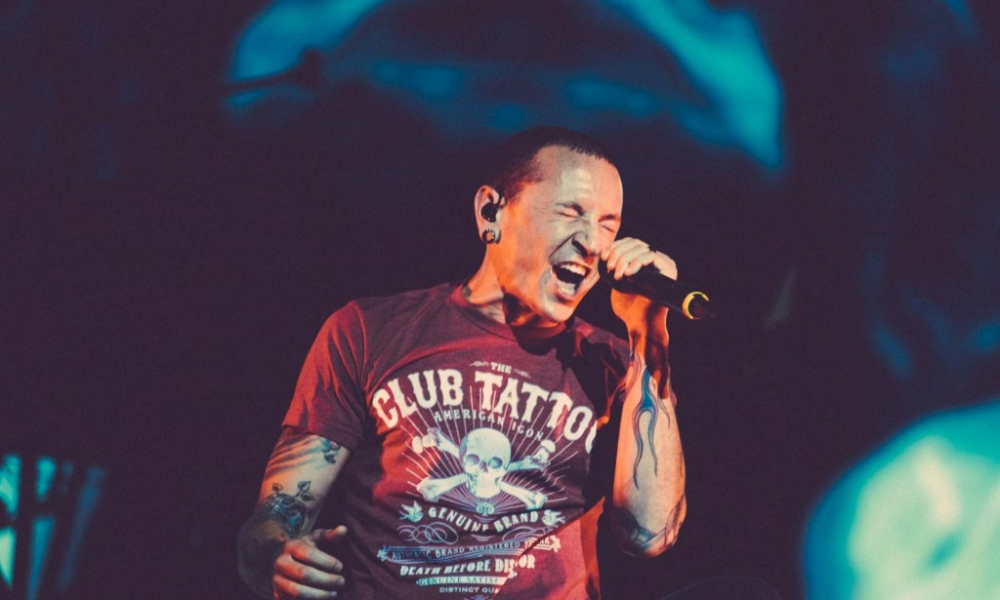

Chester Bennington
Who cares if one more light goes out in the sky of a million stars...

Chester Bennington performing in a concert for the launching ceremony of one more light.
- 1976 - Born in Phonenix, Arizona, U.S.
- 1993 - Bennington first began singing with a band called Sean Dowdell and his friends and released an eponymous three-track cassette.
- 1996 - Bennington had a child, Jaime, from his relationship with Elka Brand and he adopted Brand's other son, Isaiah(born November 8, 1997).
- 1998 - Bennington left Grey Daze in 1998, but struggled to find another band.
- 2000 - Bennington first gained prominence as a vocalist following the release of Linkin Park's debut album, Hybrid Theory which became a commercial success.
- 2003 - Chester began to suffer from extreme abdominal pain and gastrointestinal issues while filming the music video for "Numb" in Prague.
- 2005 - Bennington co-founded Dead by Sunrise, an electronic rock band from Los Angeles, California, with Orgy and Julien-K members Amir Derakh and Ryan Shuck
- 2006 - Chester married Talinda Ann Bentley, a former Playboy model with whom he had three children: Tyler Lee Bennington (born March 16, 2006) and twins Lilly and Lila (born November 6, 2011).
- 2011 - In a January 2011 interview, in response to the 2011 Tucson shooting, Bennington said, "There's a non-violent way to express yourself and get your point across – regardless of what you're saying or what your point is, in a free society, people have a right to believe whatever they want to believe.
- 2013 - Stone Temple Pilots parted ways with long-time lead singer Scott Weiland and the band recruited Bennington to replace Weiland in May 2013.
- 2015 - Bennington injured his ankle in January 2015 during a basketball game. He attempted to cope with the injury and perform with the aid of crutches and a knee scooter. Linkin Park later canceled the remainder of their tour to allow Bennington to undergo surgery and recover.
- 2017 - Chester Bennington along with his band Linking Park released their last album One More Light.
- 2017 - Bennington was found dead at his home in Palos Verdes Estates, California; his housekeeper discovered his body around 9:00 a.m. PDT on July 20, 2017.
Here's a time line of Chester Bennington:
"When I'm writing, I'm constantly thinking about myself, because it's the only experience I have to draw on. And I don't see an exact reflection of myself in every face in the audience, but I know that my songs have validity to them, and that's why the fans are there."
-- Chester Beninngton